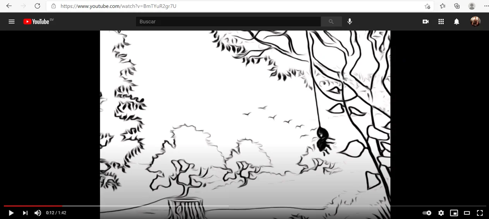

Un día + una duda + motivación
=
una respuesta, una solución y éxito.
Cuenta con la capacidad para desempeñar un buen trabajo en equipo y tomar el liderazgo si se requiere, es indicado o en su mayoría cuando las personas del entorno en que se está lo deciden, no encuentra problemas para socializar con lo cual practica el tener una buena comunicación que me permita conocer bien a las personas y saber cómo tratar con ellas, se relaciona con paciencia y flexibilidad para generar confianza y conseguir la meta que sea propuesta, además tiene una fuerte gestión del tiempo que con los años le ha permitido formar parte de muchas actividades incluso si es una agenda muy atareada o dinámica.
Posee conocimiento en programación en el lenguaje HTML y C#, también tiene conocimiento en la creación, normalización y manejo de base de datos, ha obtenido un certificado en manejo de ofimática básica, buen dominio del programa power point además de una acreditación en mecanografía y computación administrativa otorgada por el IGCAD y la certificación en Excel por Microsoft, durante sus estudios medios logro la meta de obtener un diploma de Seguridad en Internet nivel principiante de la organización telefónica de El Salvador.
Su objetivo como profesional es innovar siempre que encuentre oportunidad y ayudar a que los demás puedan obtener y comprender el conocimiento que posee.
José Antonio
Serpas Ramírez
Col. Espiritu Santo pasaje #6, Usulután, El Salvador · (503) 7893 - 2251
Es bachiller egresado del Instituto Nacional de Usulután, El Salvador en la especialidad de Desarrollo de Software (2015 - 2017).
Actualmente estudia Ingeniería en Sistemas y Redes Informáticas en la Universidad Gerardo Barrios Campus Usulután,
El Salvador.
Contacto
E-mail: joseserpas2525@gmail.com
Instagram: https://www.instagram.com/aske25_/
Linkedin: https://www.linkedin.com/in/josé-antonio-serpas-ramírez-9199a2207
Facebook: https://www.facebook.com/Jos%C3%A9-Serpas-106499914826588
Proyectos
SRPD
Sistema de Registro de Profesionales Docentes.
Un sistema que permite recolectar y admisnistrar de forma rapida e intutiva los datos de los docentes de El Salvador ademas de permitir la interaccion entre cada uno de los usuarios desde cualquier navegador con acceso a internet.
 Febrero - Dicembre 2020
Febrero - Dicembre 2020
Animatic
Animación sobre los Arácnidos.
Animacion sobre los arácnidos realizada desde cero, los primeros diseños fueron hechos a mano y luego se fueron
usando programas como InskCape, Gimp, Adobe Illustrator y Blender.

Enlace al Animatic : Animatic
Agosto - Diciembre 2020
SRPD Móvil
Sistema de Registro de Profesionales Docentes versión Móvil.
El sistema SRPD al alcance de todos en cualquier momento, eso se consiguio al transportar el sistema SRPD original a su
versión móvil incluyendo todas las funciones y volviendolo aún mas accesible al público.
 Agosto - Diciembre 2020
Agosto - Diciembre 2020
Fuente Dual de Voltaje.
Fuente de Voltaje Variable de Doble Polaridad.
Hecha desde cero, permite disponer de dos salidas de voltaje independientes, una positiva y otra negativa con un máximo de amplitud de -15 voltios y + 15 voltios, con una corriente máxima de 1.5 amperios.
 Febrero - Junio 2019
Febrero - Junio 2019
Educación
Instituto Nacional de Usulután
Bachillerato Técnico Vocacional en Desarrollo de Software.
2015 - 2017
Complejo Educativo Profa. Blanca Ramírez de Aviles
Educación Básica
2007 - 2014
Certificaciones
-
• Manejo de Ofimática Básica - Instituto Gráfico de Computación Administrativa.
-
• Técnico en Computación Administrativa - Instituto Gráfico de Computación Administrativa.
-
• Especialista en Microsoft Office Excel - Microsoft
-
• Seguridad en Internet - Fundación Telefónica El Salvador
-
• 2
do
Lugar - Recitecno 2019 - Universidad Gerardo Barrios
José Antonio Serpas Ramírez
Es bachiller egresado del Instituto Nacional de Usulután, El Salvador en la especialidad de Desarrollo de Software (2015 - 2017).
Actualmente estudia Ingeniería en Sistemas y Redes Informáticas en la Universidad Gerardo Barrios Campus Usulután,
El Salvador.
Contacto
E-mail: joseserpas2525@gmail.com
Instagram: https://www.instagram.com/aske25_/
Linkedin: https://www.linkedin.com/in/josé-antonio-serpas-ramírez-9199a2207
Facebook: https://www.facebook.com/Jos%C3%A9-Serpas-106499914826588
Proyectos
SRPD
Un sistema que permite recolectar y admisnistrar de forma rapida e intutiva los datos de los docentes de El Salvador ademas de permitir la interaccion entre cada uno de los usuarios desde cualquier navegador con acceso a internet.
Animatic
Animacion sobre los arácnidos realizada desde cero, los primeros diseños fueron hechos a mano y luego se fueron
usando programas como InskCape, Gimp, Adobe Illustrator y Blender.
SRPD Móvil
El sistema SRPD al alcance de todos en cualquier momento, eso se consiguio al transportar el sistema SRPD original a su
versión móvil incluyendo todas las funciones y volviendolo aún mas accesible al público.
Fuente Dual de Voltaje.
Hecha desde cero, permite disponer de dos salidas de voltaje independientes, una positiva y otra negativa con un máximo de amplitud de -15 voltios y + 15 voltios, con una corriente máxima de 1.5 amperios.
Educación
Instituto Nacional de Usulután
Complejo Educativo Profa. Blanca Ramírez de Aviles
Certificaciones
- • Manejo de Ofimática Básica - Instituto Gráfico de Computación Administrativa.
- • Técnico en Computación Administrativa - Instituto Gráfico de Computación Administrativa.
- • Especialista en Microsoft Office Excel - Microsoft
- • Seguridad en Internet - Fundación Telefónica El Salvador
- • 2 do Lugar - Recitecno 2019 - Universidad Gerardo Barrios